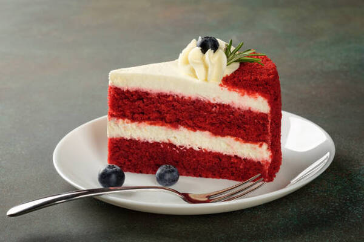

Bolo Pedaço de Céu
INGREDIENTES:
- 5 ovos
- 2 xícaras (chá) de açúcar
- ½ xícara (chá) de óleo
- 1 xícara (chá) de leite integral
- 3 xícaras (chá) de farinha de trigo peneirada
- 1 colher (sobremesa) de vinagre de vinho tinto
- 1 colher (sopa) de fermento em pó
- 1 colher (sopa) de chocolate em pó 50%
- 1 colher (café) de bicarbonato
- 1 colher (sopa) de corante vermelho
MODO DE PREPARO:
Primeiro junte o leite com o vinagre, misturar bem e deixar talhar durante alguns minutos. Bata os ovos com o açúcar na batedeira por aproximadamente 10 minutos, até que a mistura fique clara e com o volume dobrado, o segredo para um bolo fofinho. Desligue a batedeira e comece a adicionar, aos poucos, a farinha de trigo já minturada com o chocolate em pó e o leite misturado com o óleo e o corante vermelho. Evite despejar tudo de uma vez. Use um fouet ou uma espátula para incorporar os ingredientes delicadamente, fazendo movimentos de baixo para cima, preservando a leveza da massa. Por último, adicione o fermento em pó e o bicarbonato.
Em duas formas de 20 cm, divida a massa igualmente, despejando metade em cada uma. Não é necessário untar com manteiga e farinha; basta forrar o fundo das formas com papel vegetal. Leve ao forno preaquecido a 170°C por 40 minutos, ou até que o bolo passe no teste do palito.
Dica: Sirva acompanhado de Cobertura de cream cheese para bolos. Receita aqui.
A História por trás da Receita
O melhor bolo de Red Velvet que já provei na vida foi obra da prima do meu marido, Patrícia (ou Paty, como carinhosamente a chamamos). Seu bolo era simplesmente perfeito, eu chamo de "Pedaço de Céu". Ele se tornou uma presença constante e esperada nos meus aniversários, trazendo consigo o sabor da felicidade para celebrar um dia tão especial.
No entanto, por uma questão de distância geográfica, já que moro em Portugal e ela no Brasil, passei a preparar o Red Velvet para marcar minhas próprias comemorações. Minhas amigas Jovana e Nara gostaram tanto do bolo que começaram a pedir para eu prepará-lo nos aniversários delas. Duas L.O.U.C.A.S.!!
O bolo não era apenas um presente de aniversário, mas uma celebração da nossa amizade e das histórias que criamos juntas, já que as lembranças são feitas por pessoas especiais, e assim, o Red Velvet ficou como o sabor de uma linda história. Afinal, compartilhar momentos assim torna cada aniversário ainda mais inesquecível.